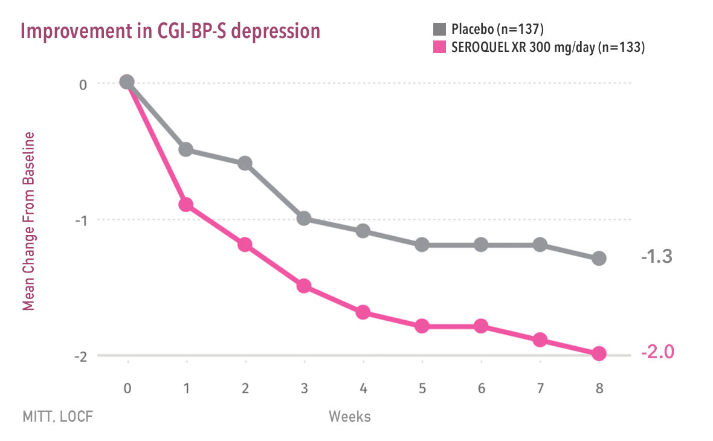
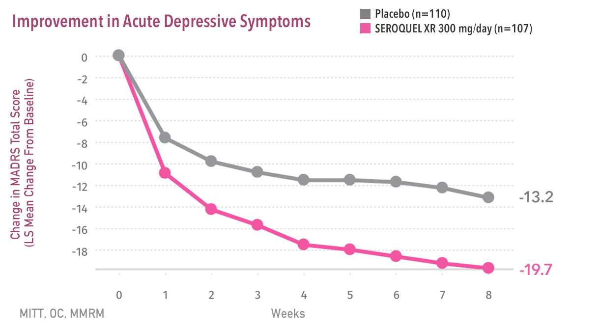
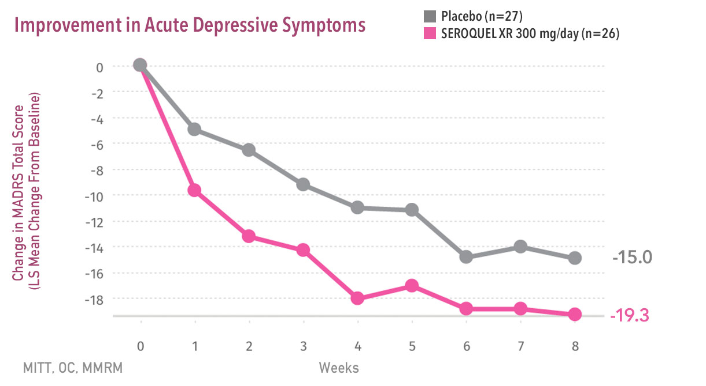
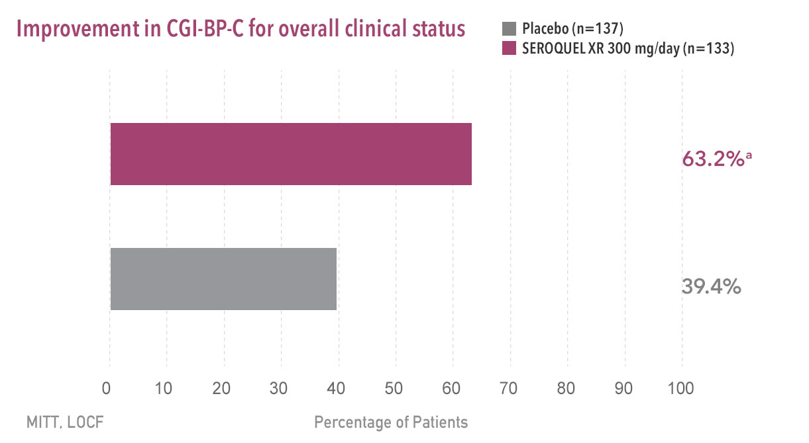
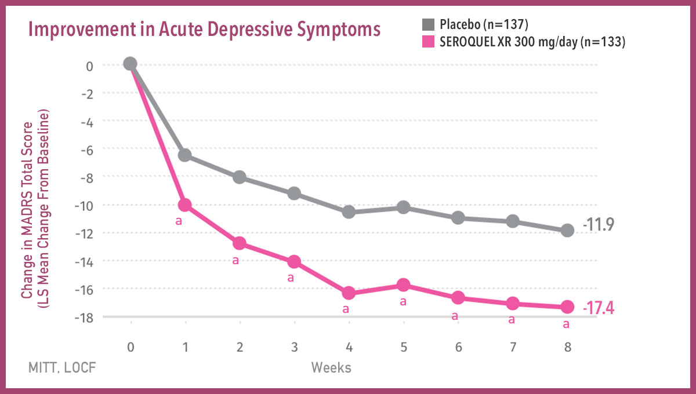
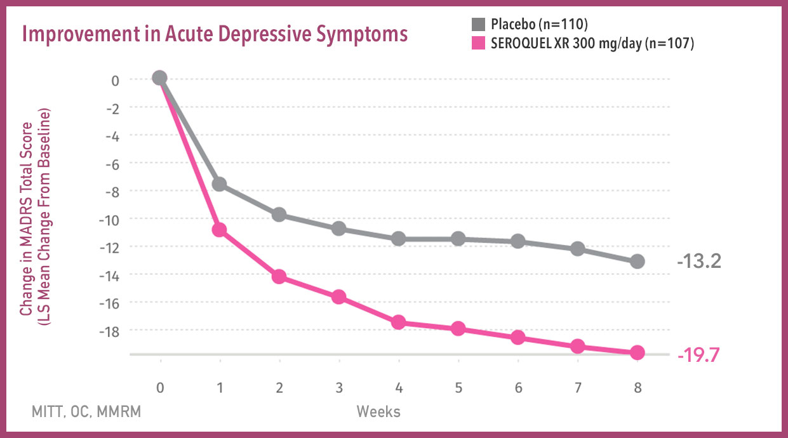
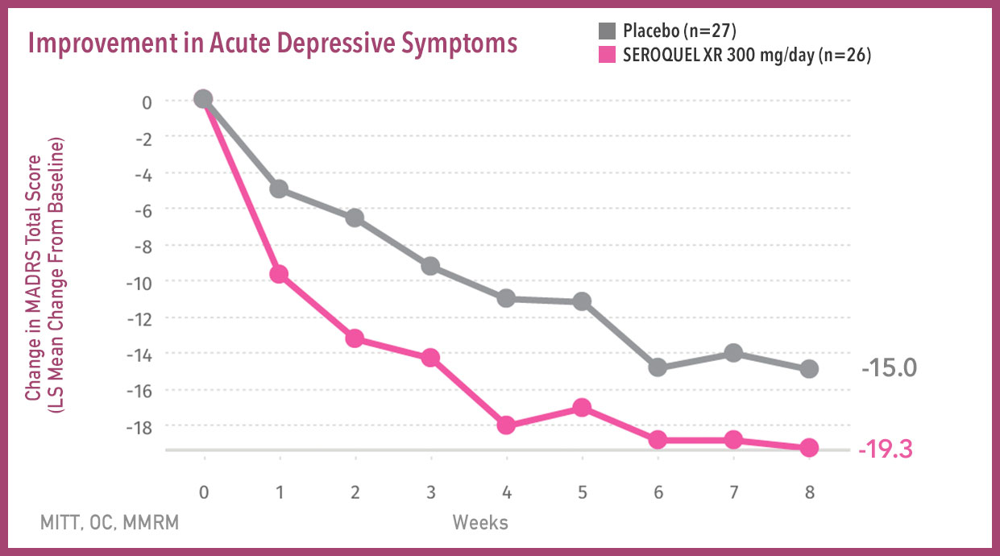
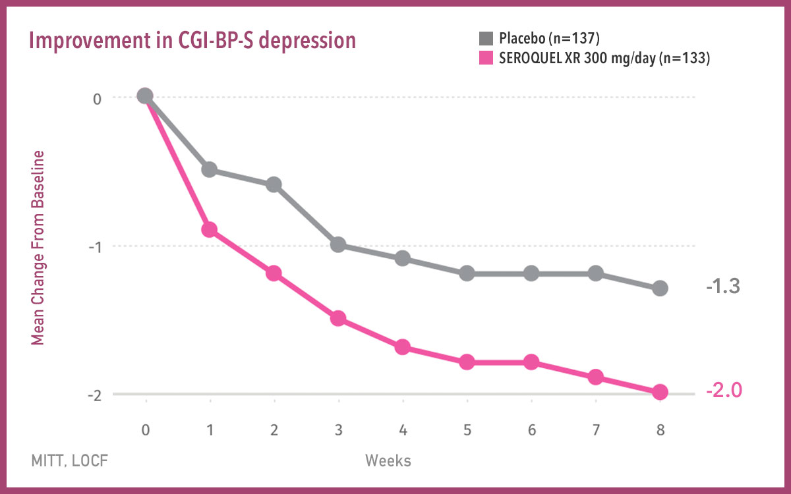
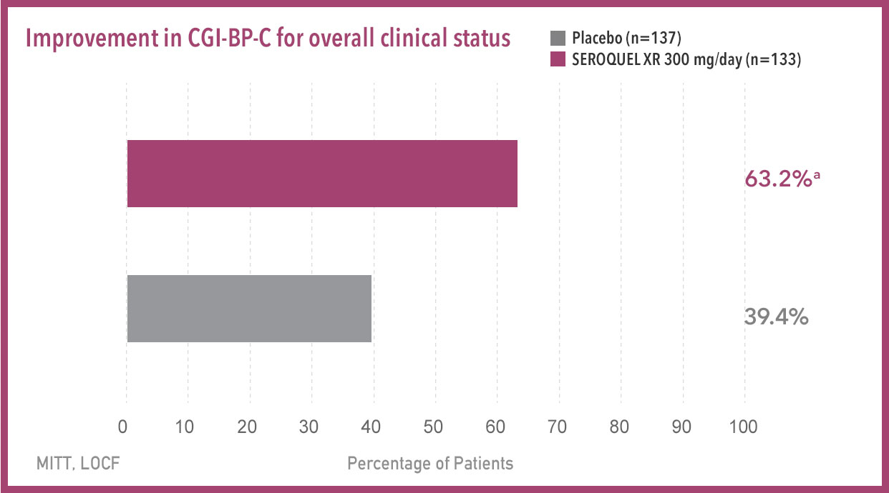

- 
- 
- 
- 
Important Safety Information About SEROQUEL XR® (quetiapine fumarate)
Increased Mortality in Elderly Patients with Dementia-Related Psychosis:
Elderly patients with dementia-related psychosis treated with antipsychotic drugs are at an increased risk of
death. SEROQUEL XR is not approved for the treatment of patients with dementia-related psychosis.
Suicidal Thoughts and Behavior:
Antidepressants increased the risk of suicidal thoughts and behavior in children, adolescents, and young adults in short-term studies. These studies did not show an increase in the risk of suicidal thoughts and behavior with antidepressant use in patients over age 24; there was a reduction in risk with antidepressant use in patients aged 65 and older. In patients of all ages who are started on antidepressant therapy, monitor closely for worsening, and for emergence of suicidal thoughts and behaviors. Advise families and caregivers of the need for close observation and communication with the prescriber. SEROQUEL XR is not approved for use in pediatric patients under ten years of age.
Contraindication
Hypersensitivity to quetiapine or to any excipients in the SEROQUEL XR formulation. Anaphylactic reactions have been reported in patients treated with SEROQUEL XR.
Cerebrovascular Adverse Reactions, Including Stroke, in Elderly Patients with Dementia-Related Psychosis:
In placebo-controlled trials with risperidone, aripiprazole, and olanzapine in elderly subjects with dementia,
there was a higher incidence of cerebrovascular adverse reactions (cerebrovascular accidents and transient ischemic attacks),
including fatalities, compared to placebo-treated subjects.
SEROQUEL XR is not approved for the treatment of patients with
dementia-related psychosis.
Neuroleptic Malignant Syndrome (NMS): A potentially fatal symptom complex, sometimes referred to as NMS, has been reported in association with administration of antipsychotic drugs, including SEROQUEL XR. Rare cases of NMS have been reported with SEROQUEL XR. Clinical manifestations of NMS are hyperpyrexia, muscle rigidity, altered mental status, and evidence of autonomic instability (irregular pulse or blood pressure, tachycardia, diaphoresis, and cardiac dysrhythmia). Additional signs may include elevated creatine phosphokinase, myoglobinuria (rhabdomyolysis), and acute renal failure. Management should include immediate discontinuation of antipsychotic drugs and other drugs not essential to concurrent therapy, intensive symptomatic treatment, and medical monitoring, and treatment of any concomitant serious medical problems.
Metabolic Changes:
Atypical antipsychotic drugs have been associated with metabolic changes that include hyperglycemia/diabetes mellitus, dyslipidemia, and body weight gain. In some patients, a worsening of more than one of the metabolic parameters of weight, blood glucose, and lipids was observed in clinical studies. Changes in these metabolic profiles should be managed as
clinically appropriate.
- Hyperglycemia and Diabetes Mellitus: Hyperglycemia, in some cases extreme and associated with ketoacidosis, hyperosmolar coma, or death, has been reported in patients treated with atypical antipsychotics, including SEROQUEL XR. The relationship of atypical use and glucose abnormalities is complicated by the possibility of increased risk of diabetes in the schizophrenic population and the increasing incidence of diabetes in the general population. However, epidemiological studies suggest an increased risk of treatment-emergent, hyperglycemia-related adverse reactions in patients treated with atypical antipsychotics. Patients starting treatment with atypical antipsychotics who have or are at risk for diabetes should undergo fasting blood glucose testing at the beginning of and periodically during treatment. Patients who develop symptoms of hyperglycemia should also undergo fasting blood glucose testing. Any patient treated with atypical antipsychotics should be monitored for symptoms of hyperglycemia including polydipsia, polyuria, polyphagia, and weakness. In some cases, hyperglycemia has resolved when the atypical antipsychotic was discontinued; however, some patients required continuation of antidiabetic treatment despite discontinuation of the suspect drug.
- Dyslipidemia: Undesirable alterations in lipids have been observed with SEROQUEL XR use. Increases in total cholesterol, LDL-cholesterol and triglycerides, and decreases in HDL-cholesterol have been reported in clinical trials. Appropriate clinical monitoring is recommended, including fasting blood lipid testing at the beginning of and periodically during treatment.
-
Weight Gain: Increases in weight have been observed in clinical trials. Patients receiving
SEROQUEL XR should receive regular monitoring of weight.
Tardive Dyskinesia (TD): TD, a potentially irreversible syndrome of involuntary dyskinetic movements, may develop in patients treated with antipsychotic drugs. The risk of developing TD and the likelihood that it will become irreversible are believed to increase as the duration of treatment and total cumulative dose of antipsychotic drugs administered to the patient increase. Although much less commonly, TD can develop after relatively brief treatment periods at low doses or even after treatment discontinuation. TD may remit, partially or completely, if antipsychotic treatment is withdrawn. SEROQUEL XR should be prescribed in a manner that is most likely to minimize the occurrence of TD, and discontinuation should be considered if signs and symptoms of TD occur.
Hypotension: SEROQUEL XR may induce orthostatic hypotension with associated dizziness, tachycardia, and syncope, especially during the initial dose titration period and should be used with caution in patients predisposed to hypotension or with known cardiovascular or cerebrovascular disease.
Leukopenia, Neutropenia, and Agranulocytosis: Leukopenia, neutropenia, and agranulocytosis (including fatal cases), have been reported temporally related to atypical antipsychotics, including SEROQUEL XR. Patients with a pre-existing low white blood cell (WBC) count or a history of drug-induced leukopenia/neutropenia should have their complete blood count monitored frequently during the first few months of therapy. In these patients, SEROQUEL XR should be discontinued at the first sign of a decline in WBC absent other causative factors. Patients with neutropenia should be carefully monitored, and SEROQUEL XR should be discontinued in any patient if the absolute neutrophil count is <1000/mm3.
Cataracts: Examination of the lens by methods adequate to detect cataract formation, such as slit lamp exam or other appropriately sensitive methods, is recommended at initiation of treatment or shortly thereafter, and at 6-month intervals during chronic treatment.
QT Prolongation: Postmarketing cases show increases in QT interval in patients who overdosed on quetiapine, in patients with concomitant illness, and in patients taking medicines known to cause electrolyte imbalance or increase the QT interval. Avoid use with drugs that increase the QT interval and in patients with risk factors for prolonged QT interval.
Seizures: SEROQUEL XR should be used cautiously in patients with a history of seizures or with conditions that potentially lower the seizure threshold (eg, Alzheimer’s dementia).
Potential for Cognitive and Motor Impairment: Since SEROQUEL XR has the potential to impair judgment, thinking, or motor skills, patients should be cautioned about performing activities requiring mental alertness, such as operating a motor vehicle or operating hazardous machinery, until they are reasonably certain that SEROQUEL XR therapy does not affect them adversely.
Body Temperature Regulation: Disruption of the body’s ability to reduce core body temperature has been attributed to antipsychotics. Appropriate care is advised for patients who may exercise strenuously, be exposed to extreme heat, receive concomitant medication with anticholinergic activity, or be subject to dehydration.
Dysphagia: Esophageal dysmotility and aspiration have been associated with antipsychotic drug use. Use caution in patients at risk for aspiration pneumonia. Aspiration pneumonia is a common cause of morbidity and mortality in elderly patients, in particular those with advanced Alzheimer’s dementia.
Warnings and Precautions Also Include: The risk of hypothyroidism, hyperprolactinemia, and discontinuation syndrome.
Common Adverse Reactions: The most commonly observed adverse reactions (incidence ≥5% and twice placebo) associated with the use of SEROQUEL XR versus placebo in clinical trials for all adult indications were somnolence (25%-52% vs 9%-13%), dry mouth (12%-40% vs 1%-8%), constipation (6%-11% vs 3%-6%), dizziness (10%-13% vs 4%-11%), increased appetite (2%-12% vs 0%-6%), dyspepsia (2%-7% vs 1%-4%), weight gain (3%-7% vs 0%-1%), fatigue (3%-14% vs 2%-4%), dysarthria (2%-5% vs 0%), and nasal congestion (2%-5% vs 1%).
Please read Prescribing Information, including Boxed WARNINGS.
You are encouraged to report negative side effects of prescription drugs to the FDA. Visit www.FDA.gov/medwatch or call 1-800-FDA-1088.
The product information is intended for US health care professionals only.
SEROQUEL XR is a registered trademark of the AstraZeneca group of companies.
©2015 AstraZeneca. All rights reserved. 3086417 Last Updated 2/15
Clinical Global Impressions-Bipolar-Severity scale (CGI-BP-S)1
- A subscale of the CGI-BP scale based on 3 domains: overall bipolar illness, mania, and depression
- Scoring reflects clinician’s impression of the patient’s clinical presentation in
comparison to other patients seen throughout total clinical experience - CGI-BP-S scores range from 1 to 7: 1 (normal, not ill); 2 (minimally ill); 3 (mildly
ill); 4 (moderately ill); 5 (markedly ill); 6 (severely ill); 7 (very severely ill). A
greater decrease in the score represents more improvement
- Spearing MK, Post RM, Leverich GC, et al. Modification of the Clinical Global Impressions (CGI) scale for use in bipolar illness (BP): the CGI-BP. Psychiatry Res. 1997;73(3):159-171.
Clinical Global Impressions-Bipolar-Change scale (CGI-BP-C)1
- A subscale of the Clinical Global Impressions-Bipolar (BP) scale
- Provides a global assessment of a patient's clinical status based on 3 domains: overall bipolar illness, mania, and depression
- CGI-BP-C scores range from 1-7: 1 (very much improved), 2 (much improved), 3 (minimally improved), 4 (no change), 5 (minimally worse), 6 (much worse), 7 (very much worse)
- Spearing MK, Post RM, Leverich GC, et al. Modification of the Clinical Global Impressions (CGI) scale for use in bipolar illness (BP): the CGI-BP. Psychiatry Res. 1997;73(3):159-171.
References
- Suppes T, Datto C, Minkwitz M, et al. Corrigendum to “Effectiveness of the Extended Release Formulation of Quetiapine as Monotherapy for the Treatment of Acute Bipolar Depression” [J Affect Disord. 121(1-2) (2010)106-115]. J Affect Disord. 2014;168:485-493.
- Data on file, 3017412, AstraZeneca Pharmaceuticals LP.
SEROQUEL XR in Acute Depressive Episodes of Bipolar Disorder Trial
Subgroups of Patients with Bipolar I and Bipolar II Disorders
Data from an 8-week, multicenter, randomized, double-blind, parallel-group, placebo-controlled monotherapy trial in the treatment of patients with depressive episodes associated with bipolar I or bipolar II disorder. Prespecified analytical statistics (P-values) were not conducted for Weeks 1 through 7.
References
- Data on file, 3018500, AstraZeneca Pharmaceuticals LP.
- Suppes T, Datto C, Minkwitz M, et al. Corrigendum to “Effectiveness of the Extended Release Formulation of Quetiapine as Monotherapy for the
Treatment of Acute Bipolar Depression” [J Affect Disord. 121(1-2)
(2010)106-115]. J Affect Disord. 2014;168:485-493.
References
- Suppes T, Datto C, Minkwitz M, et al. Corrigendum to “Effectiveness of the Extended Release Formulation of Quetiapine as Monotherapy for the
Treatment of Acute Bipolar Depression” [J Affect Disord. 121(1-2)
(2010)106-115]. J Affect Disord. 2014;168:485-493. - Data on file, 2804000, AstraZeneca Pharmaceuticals LP.
References
-
Suppes T, Datto C, Minkwitz M, et al. Corrigendum to “Effectiveness of the
Extended Release Formulation of Quetiapine as Monotherapy for the Treatment of
Acute Bipolar Depression” [J Affect Disord. 121(1-2) (2010)106-115]. J Affect Disord.
2014;168:485-493. - Data on file, 2804000, AstraZeneca Pharmaceuticals LP.
Montgomery-Åsberg Depression Rating Scale (MADRS)1
- Used for the evaluation of symptoms of depression in adults and for the assessment of changes in these symptoms
- Each of the 10 items is rated on a scale of 0 to 6
- Individual item scores are added to form a Total Score
- Total Scores range from 0 to 60 points, with lower scores showing improvement
| MADRS 10 Items | |
| Apparent sadness | Reported sadness |
| Inner tension | Reduced sleep |
| Reduced appetite | Concentration difficulties |
| Lassitude | Inability to feel |
| Pessimistic thoughts | Suicidal thoughts |
- Montgomery SA, Åsberg M. A new depression scale designed to be
sensitive to change. Br J Psychiatry. 1979;134:382-389.
SEROQUEL XR in acute depressive episodes of bipolar disorder trial1
An 8-week, multicenter, randomized, double-blind, parallel-group, placebo-controlled monotherapy trial
in patients with acute depressive episodes associated with bipolar I or bipolar II disorder.
| Study Design | Placebo (n=140) |
|
Randomization following a screening period (up to 7 days) and washout
(up to 28 days) to discontinue psychotropic medications Screening and Enrollment (up to 35 days)
Diagnosis at baseline: Bipolar I (~80% of patients), bipolar II (~20% of
patients); rapid cycling (~27% of patients were diagnosed with rapid cycling, defined as ≥4 but ≤8 mood episodes in the past year); patients had a mean baseline MADRS Total Score of ~30 and a mean baseline HAM-D17 total score of ~25 Patients were excluded from the study if they had a DSM-IV-TR diagnosis of
|
Double-blind Phase (8 Weeks)
SEROQUEL XR 300 mg/day (n=140)*
50 mg/day on Day 1
100 mg/day on Day 2 200 mg/day on Day 3 300 mg/day from Day 4 through study completion |
Antidepressant efficacy in bipolar depression as early as Week 1 and
continuing through Week 81
58% reduction in mean MADRS Total Score from baseline to Week 8 for SEROQUEL XR vs 40% for placebo2
SEROQUEL XR 300 mg/day delivered significant efficacy as monotherapy in acute depressive episodes
of bipolar disorder as early as Week 1, continuing through Week 8 (primary end point)1
|

Efficacy at Week 1
Efficacy at Week 1 continuing through Week 8
58% reduction
in mean MADRS
Total Score from baseline to Week 8 for SEROQUEL XR vs 40% for placebo2 SEROQUEL XR demonstrated significant improvement in acute depressive
|
|  |
In a prespecified subgroup
|
- |
|  |
In a prespecified subgroup
|
SEROQUEL XR significantly improved CGI-BP-S Scale at Week 81,2
SEROQUEL XR 300 mg/day led to significant improvements in CGI-BP-S for overall depression
-
 - In this prespecified secondary end
point, mean improvements in
CGI-BP-S scores for both depression
and overall bipolar illness (not shown
on graph) from baseline to Week 8
were significant for SEROQUEL XR
compared with placebo (P<0.001)2* - Mean changes in CGI-BP-S for mania
from baseline to Week 8 were not
significantly different between
SEROQUEL XR and placebo (P=NS)2 Suppes et al study designCGI-BP-S = Clinical Global
*
Impressions-Bipolar-Severity of Illness
MITT = modified intention to treat
LOCF = last observation carried forward
NS = not significantPrespecified analytical statistics (P values) were
not conducted for Weeks 1 through 7.
- In this prespecified secondary end
-
 - In the bipolar depression trial,
63.2% of patients taking
SEROQUEL XR received ratings
using the CGI-BP-C of "much
improved" or "very much
improved" at Week 8, vs 39.4%
with placebo (P<0.001)1,2* - Mean CGI-BP-C scores for mania
at Week 8 were not significantly
different between SEROQUEL XR
and placebo (P=NS)1 Suppes et al study designCGI-BP-C = Clinical Global
*
Impressions-Bipolar-Change
MITT = modified intention to treat
LOCF = last observation carried forward
NS = not significantPrespecified analytical statistics (P values) were
not conducted for Weeks 1 through 7.
- In the bipolar depression trial,
Important Safety Information About SEROQUEL XR® (quetiapine fumarate)
Increased Mortality in Elderly Patients with Dementia-Related Psychosis: Elderly patients with dementia-related psychosis
treated with antipsychotic drugs are at an increased risk of death. SEROQUEL XR is not approved for the treatment of patients
with dementia-related psychosis. MORE
Please read Important Safety Information and Prescribing Information, including Boxed WARNINGS.